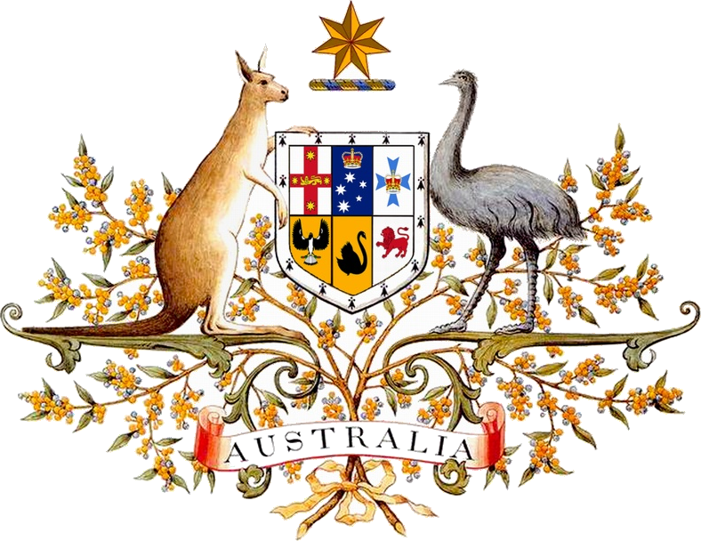

AUSTRALIENS DJUR
Australien har en landyta på 7 617 930 kvadratkilometer och ligger på den indoaustraliska kontinentalplattan. Landet omges av Indiska oceanen, Antarktiska oceanen och Stilla havet och separeras från Asien av Arafurahavet och Timorhavet. Australien har en kustlinje på totalt 34 218 kilometer (exklusive öar), och gör anspråk på en ekonomisk zon på 8 148 250 km², vilket inte inkluderar Australiska Antarktis.
De mest utbredda naturtyperna i Australien är savann och öken. Därutöver finns också en stor variation av olika naturtyper av mindre omfattning, allt från alpina slätter till tropiska regnskogar. På grund av kontinentens höga ålder, dess mycket varierande vädermönster, och dess långa geografiska isolering är mycket av Australiens flora och fauna unik och innehåller många mycket olika organismer. Runt 85 procent av blomväxterna, 84 procent av däggdjuren, mer än 45 procent av fåglarna och 89 procent av de kustnära fiskarna är endemiska. Australien har bland annat flest reptilarter av alla länder med totalt 765 arter. Många av Australiens ekologiska regioner, och arterna inom dessa regioner, hotas av mänsklig aktivitet och importerade växter och djur. Den federala Environment Protection and Biodiversity Conservation Act 1999 är ett antal lagar som tagits fram för att skydda hotade arter. Många naturreservat och skyddade områden har skapats för att skydda och bevara Australiens flora och fauna.